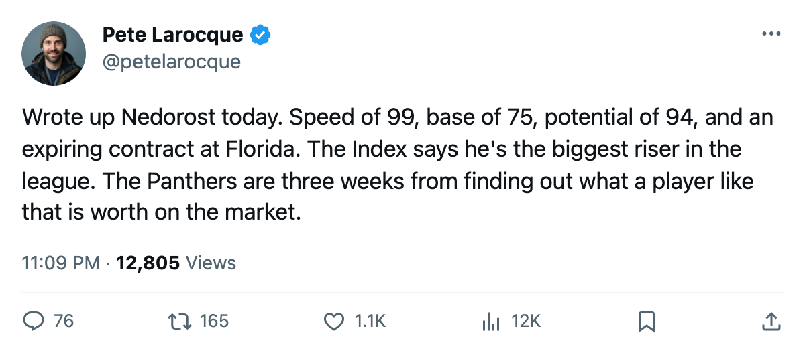
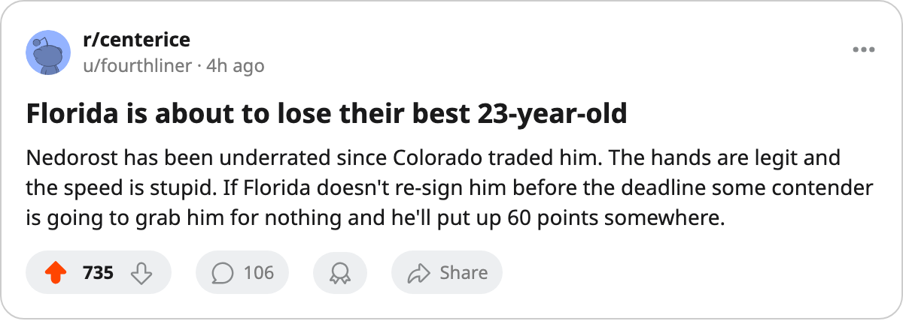

His Speed Is 99. His Index Rises +12. His Contract Expires at the Deadline.
Vaclav Nedorost is the Bureau's biggest riser and Florida has no reason to keep him.
 Pete LarocqueScouting editor · The Prospect File
Pete LarocqueScouting editor · The Prospect File
 Vaclav Nedorost83 sits at +12 on the Bureau's Development Index, the largest jump of any player in the league. His overall reads 84. His base grade is 75. Speed grade, 99.
Vaclav Nedorost83 sits at +12 on the Bureau's Development Index, the largest jump of any player in the league. His overall reads 84. His base grade is 75. Speed grade, 99.
He is 23, with 21 points in 25 games at 23.0 minutes a night for  Florida Panthers, a club sitting at 7-11-3 and 25 points in the Southeast division. His contract has 0 years left at $1.00M.
Florida Panthers, a club sitting at 7-11-3 and 25 points in the Southeast division. His contract has 0 years left at $1.00M.
Base grade, potential, and the Index
The Book prints two grades beside every player's name. The base grade is what the Bureau thinks he is right now, stripped of hot and cold. The potential is where the Bureau thinks his ceiling sits. Nedorost's base is 75. His potential is 94. The Index has moved him 12 of that distance in a single reading.
The attribute grades explain the jump. Speed 99. Passing 96. Agility 95. Puck handling 95. Shot power 95. Acceleration 93. First-line numbers. His weakest displayed grades are a fighting rating of 50 and an obstinacy rating of 61. The hands and feet already belong to a top-six center. The base grade of 75 is what the rest of his game looked like before December.
Where he's been
Colorado took him 14th overall in 2000 out of HC Ceske Budejovice. He crossed to North America the following season, played with the Hershey Bears, and appeared in 25 NHL games for the Avalanche in 2001-02, scoring 4 points. Another 42 games in 2002-03, then the trade. On July 19, 2003, Colorado sent him to Florida along with Eric Messier for Peter Worrell and a second-round selection.
| season | team | gp | goals | assists | points | mpg |
|---|---|---|---|---|---|---|
| 2001-02 | COL | 25 | 2 | 2 | 4 | |
| 2003-04 | FLA | 69 | 13 | 12 | 25 | 13.4 |
| 2004-05 | FLA | 25 | 5 | 16 | 21 | 23.0 |
His 2003-04 line shows 25 points across 69 games at 13.4 minutes a night. A leg injury cost him time in the spring, the return line reading April 24. This season his ice time has jumped to 23.0 minutes and his point production has climbed to 21 in 25 games. The assist total, 16, is more than his entire 2003-04 assist output of 12.
The Development Index calls this form. The speed of 99 says the Bureau has always known what the feet can do. The Index at +12 says the rest of the game is catching up.
The $1.00M question
The trade deadline is 105 days from today. Nedorost is the top riser on the Index, his contract has 0 years remaining, and his cap hit is $1.00M. Florida is 4 points behind division-leading Tampa Bay. The Panthers are not out of it, but they are not in it either.
Florida Panthers has  Jay Bouwmeester82 at 22, a potential of 95, and an overall of 83. The Panthers have
Jay Bouwmeester82 at 22, a potential of 95, and an overall of 83. The Panthers have  Olli Jokinen84 at 85 overall and
Olli Jokinen84 at 85 overall and  David Aebischer86 at 89 in goal. Nedorost at 84 sits between them on the depth chart. The roster fits. The record does not.
David Aebischer86 at 89 in goal. Nedorost at 84 sits between them on the depth chart. The roster fits. The record does not.
His morale reads 100. He is not going to force anything. But a 23-year-old center with a speed grade of 99, a potential of 94, and $1.00M in salary is a player every contender will price in March. Florida's decision is whether the +12 on the Index is the real player or a hot reading that will regress. The Bureau's Development Index does not explain itself. It just moves the number.
The base grade says 75. The current overall says 84. The potential says 94. His contract says 0 years. The trade deadline says 105 days.

